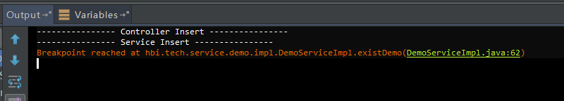
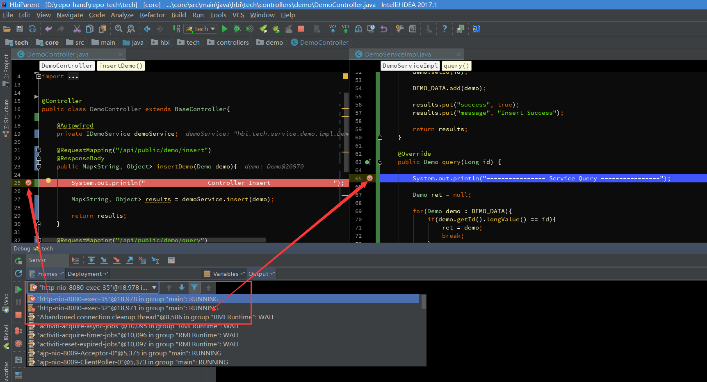
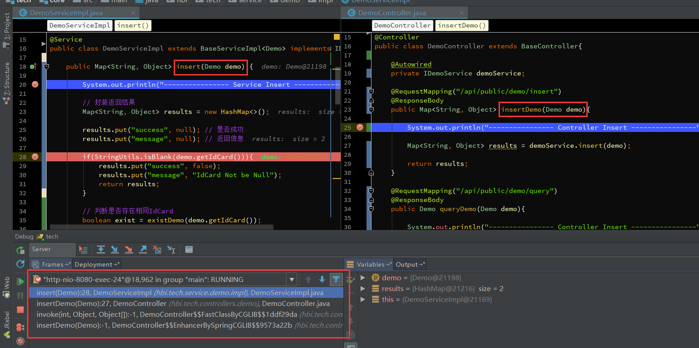

Debug用来追踪代码的运行流程，通常在程序运行过程中出现异常，启用Debug模式可以分析定位异常发生的位置，以及在运行过程中参数的变化。通常我们也可以启用Debug模式来跟踪代码的运行流程去学习三方框架的源码。
所以学习下如何在Intellij IDEA中使用好Debug，主要包括如下内容：
Debug基础与配置
首先看下IDEA中Debug模式下的界面。
如下是在IDEA中启动Debug模式，进入断点后的界面，我这里是Windows，可能和Mac的图标等会有些不一样。就简单说下图中标注的8个地方：
① 以Debug模式启动服务，左边的一个按钮则是以Run模式启动。在开发中，我一般会直接启动Debug模式，方便随时调试代码。
② 断点：在左边行号栏单击左键，或者快捷键Ctrl+F8 打上/取消断点，断点行的颜色可自己去设置。
③ Debug窗口：访问请求到达第一个断点后，会自动激活Debug窗口。如果没有自动激活，可以去设置里设置，如图1.2。
④ 调试按钮：一共有8个按钮，调试的主要功能就对应着这几个按钮，鼠标悬停在按钮上可以查看对应的快捷键。在菜单栏Run里可以找到同样的对应的功能，如图1.4。
⑤ 服务按钮：可以在这里关闭/启动服务，设置断点等。
⑥ 方法调用栈：这里显示了该线程调试所经过的所有方法，勾选右上角的[Show All Frames]按钮，就不会显示其它类库的方法了，否则这里会有一大堆的方法。
⑦ Variables：在变量区可以查看当前断点之前的当前方法内的变量。
⑧ Watches：查看变量，可以将Variables区中的变量拖到Watches中查看

[图1.2]：在设置里勾选Show debug window on breakpoint，则请求进入到断点后自动激活Debug窗口
如果你的IDEA底部没有显示工具栏或状态栏，可以在View里打开，显示出工具栏会方便我们使用。可以自己去尝试下这四个选项。
在菜单栏Run里有调试对应的功能，同时可以查看对应的快捷键。
基本用法&快捷键
Debug调试的功能主要对应着图一中4和5两组按钮：
1、首先说第一组按钮，共8个按钮，从左到右依次如下：
> Show Execution Point (Alt + F10)：如果你的光标在其它行或其它页面，点击这个按钮可跳转到当前代码执行的行。
> Step Over (F8)：步过，一行一行地往下走，如果这一行上有方法不会进入方法。
> Step Into (F7)：步入，如果当前行有方法，可以进入方法内部，一般用于进入自定义方法内，不会进入官方类库的方法，如第25行的put方法。
> Force Step Into (Alt + Shift + F7)：强制步入，能进入任何方法，查看底层源码的时候可以用这个进入官方类库的方法。
> Step Out (Shift + F8)：步出，从步入的方法内退出到方法调用处，此时方法已执行完毕，只是还没有完成赋值。
> Drop Frame (默认无)：回退断点，后面章节详细说明。
> Run to Cursor (Alt + F9)：运行到光标处，你可以将光标定位到你需要查看的那一行，然后使用这个功能，代码会运行至光标行，而不需要打断点。
> Evaluate Expression (Alt + F8)：计算表达式，后面章节详细说明。
2、第二组按钮，共7个按钮，从上到下依次如下：
[图2.2]
> Rerun ‘xxxx’：重新运行程序，会关闭服务后重新启动程序。
> Update ‘tech’ application (Ctrl + F5)：更新程序，一般在你的代码有改动后可执行这个功能。而这个功能对应的操作则是在服务配置里，如图2.3。
> Resume Program (F9)：恢复程序，比如，你在第20行和25行有两个断点，当前运行至第20行，按F9，则运行到下一个断点(即第25行)，再按F9，则运行完整个流程，因为后面已经没有断点了。
> Pause Program：暂停程序，启用Debug。目前没发现具体用法。
> Stop ‘xxx’ (Ctrl + F2)：连续按两下，关闭程序。有时候你会发现关闭服务再启动时，报端口被占用，这是因为没完全关闭服务的原因，你就需要查杀所有JVM进程了。
> View Breakpoints (Ctrl + Shift + F8)：查看所有断点，后面章节会涉及到。
> Mute Breakpoints：哑的断点，选择这个后，所有断点变为灰色，断点失效，按F9则可以直接运行完程序。再次点击，断点变为红色，有效。如果只想使某一个断点失效，可以在断点上右键取消Enabled，如图2.4，则该行断点失效。
更新程序，On ‘Update’ actions，执行更新操作时所做的事情，一般选择’Update classes and resources’，即更新类和资源文件。
一般配合热部署插件会更好用，如JRebel，这样就不用每次更改代码后还要去重新启动服务。如何激活JRebel，在最后章节附上。
下面的On frame deactivation，在IDEA窗口失去焦点时触发，即一般你从idea切换到浏览器的时候，idea会自动帮你做的事情，一般可以设置Do nothing，频繁切换会比较消耗资源的。
变量查看
在Debug过程中，跟踪查看变量的变化是非常必要的，这里就简单说下IDEA中可以查看变量的几个地方，相信大部分人都了解。
1、如下，在IDEA中，参数所在行后面会显示当前变量的值。
[图3.1]
2、光标悬停到参数上，显示当前变量信息。点击打开详情如图3.3。我一般会使用这种方式，快捷方便。
[图3.2]
[图3.3]
3、在Variables里查看，这里显示当前方法里的所有变量。
[图3.4]
4、在Watches里，点击New Watch，输入需要查看的变量。或者可以从Variables里拖到Watche里查看。
[图3.5]
如果你发现你没有Watches，可能在下图所在的地方。
[图3.6]
计算表达式
在前面提到的计算表达式如图4.1的按钮，Evaluate Expression (Alt + F8) 。可以使用这个操作在调试过程中计算某个表达式的值，而不用再去打印信息。
 [图4.1]
[图4.1]
1、按Alt + F8或按钮，或者，你可以选中某个表达式再Alt + F8，弹出计算表达式的窗口，如下，回车或点击Evaluate计算表达式的值。
这个表达式不仅可以是一般变量或参数，也可以是方法，当你的一行代码中调用了几个方法时，就可以通过这种方式查看查看某个方法的返回值。
[图4.2]
2、设置变量，在计算表达式的框里，可以改变变量的值，这样有时候就能很方便我们去调试各种值的情况了不是。
智能步入
想想，一行代码里有好几个方法，怎么只选择某一个方法进入。之前提到过使用Step Into (Alt + F7) 或者 Force Step Into (Alt + Shift + F7)进入到方法内部，但这两个操作会根据方法调用顺序依次进入，这比较麻烦。
那么智能步入就很方便了，智能步入，这个功能在Run里可以看到，Smart Step Into (Shift + F7)，如图5.1
 [图5.1]
[图5.1]
按Shift + F7，会自动定位到当前断点行，并列出需要进入的方法，如图5.2，点击方法进入方法内部。
如果只有一个方法，则直接进入，类似Force Step Into。
 [图5.2]
[图5.2]
断点条件设置
通过设置断点条件，在满足条件时，才停在断点处，否则直接运行。
通常，当我们在遍历一个比较大的集合或数组时，在循环内设置了一个断点，难道我们要一个一个去看变量的值？那肯定很累，说不定你还错过这个值得重新来一次。
1、在断点上右键直接设置当前断点的条件，如图6.1，我设置exist为true时断点才生效。
![img]../../../../img/856154-20170905165253944-1162138475.png) [图6.1]
2、点击View Breakpoints (Ctrl + Shift + F8)，查看所有断点。
Java Line Breakpoints 显示了所有的断点，在右边勾选Condition，设置断点的条件。
勾选Log message to console，则会将当前断点行输出到控制台，如图6.3
勾选Evaluate and log，可以在执行这行代码是计算表达式的值，并将结果输出到控制台。

3、再说说右边的Filters过滤，这些一般情况下不常用，简单说下意思。
Instance filters：实例过滤，输入实例ID(如图6.5中的实例ID)，但是我这里没有成功，不知道什么原因，知道的朋友留个言。
Class filters：类过滤，根据类名过滤，同样没有成功….
Pass count：用于循环中，如果断点在循环中，可以设置该值，循环多少次后停在断点处，之后的循环都会停在断点处。


4、异常断点，通过设置异常断点，在程序中出现需要拦截的异常时，会自动定位到异常行。
如图6.6，点击+号添加Java Exception Breakpoints，添加异常断点。然后输入需要断点的异常类，如图6.7，之后可以在Java Exception Breakpoints里看到添加的异常断点。
我这里添加了一个NullPointerException异常断点，如图6.8，出现空指针异常后，自动定位在空指针异常行。
多线程调试
一般情况下我们调试的时候是在一个线程中的，一步一步往下走。但有时候你会发现在Debug的时候，想发起另外一个请求都无法进行了？
那是因为IDEA在Debug时默认阻塞级别是ALL，会阻塞其它线程，只有在当前调试线程走完时才会走其它线程。可以在View Breakpoints里选择Thread，如图7.1，然后点击Make Default设置为默认选项。
切换线程，在图7.2中Frames的下拉列表里，可以切换当前的线程，如下我这里有两个Debug的线程，切换另外一个则进入另一个Debug的线程。

回退断点
在调试的时候，想要重新走一下流程而不用再次发起一个请求？
1、首先认识下这个方法调用栈，如图8.1，首先请求进入DemoController的insertDemo方法，然后调用insert方法，其它的invoke我们且先不管，最上面的方法是当前断点所在的方法。

2、断点回退
所谓的断点回退，其实就是回退到上一个方法调用的开始处，在IDEA里测试无法一行一行地回退或回到到上一个断点处，而是回到上一个方法。
回退的方式有两种，一种是Drop Frame按钮(图8.2)，按调用的方法逐步回退，包括三方类库的其它方法(取消Show All Frames按钮会显示三方类库的方法，如图8.3)。
第二种方式，在调用栈方法上选择要回退的方法，右键选择Drop Frame(图8.4)，回退到该方法的上一个方法调用处，此时再按F9(Resume Program)，可以看到程序进入到该方法的断点处了。
但有一点需要注意，断点回退只能重新走一下流程，之前的某些参数/数据的状态已经改变了的是无法回退到之前的状态的，如对象、集合、更新了数据库数据等等。


中断Debug
想要在Debug的时候，中断请求，不要再走剩余的流程了？
有些时候，我们看到传入的参数有误后，不想走后面的流程了，怎么中断这次请求呢(后面的流程要删除数据库数据呢….)，难道要关闭服务重新启动程序？嗯，我以前也是这么干的。
确切的说，我也没发现可以直接中断请求的方式(除了关闭服务)，但可以通过Force Return，即强制返回来避免后续的流程，如图9.1。
点击Force Return，弹出Return Value的窗口，我这个方法的返回类型为Map，所以，我这里直接返回 results，来强制返回，从而不再进行后续的流程。或者你可以new HashMap<>()。

转载至：http://www.cnblogs.com/chiangchou/

...
...
Copyright 2021 sunfy.top ALL Rights Reserved